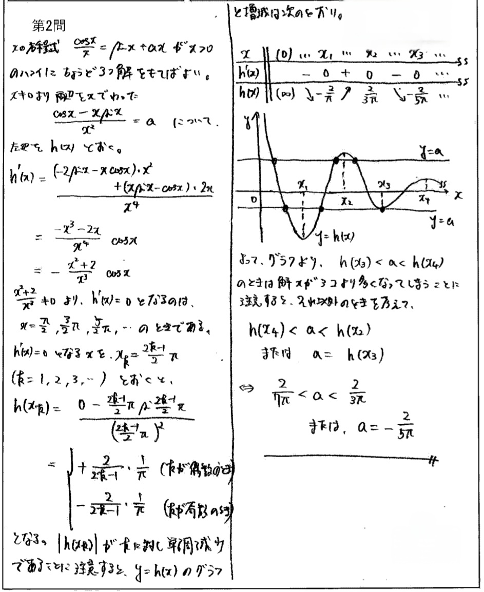

ブックマーク
東大理系数学 2013-2
$a$ を実数とし，$x>0$ で定義された関数 $f(x),g(x)$ を次のように定める。
$f(x)=\dfrac{\cos x}{x}$
$g(x)=\sin x+ax$
このとき $y=f(x)$ のグラフと $y=g(x)$ のグラフが $x>0$ において共有点をちょうど3つもつような $a$ をすべて求めよ。
方針、略解
$a$ について解ける形をしているので、定数分離を行う。
式の見た目に反し、微分後は綺麗になる。（本問は関係ないが、逆に言えば【微分後の式】の不定積分が解けるというのは、少し興味深いかもしれない）
まずは定数分離に気づけるかどうか、そして微分を正確に実行できるかどうかが分かれ道になりそう。（その後は一本道）

＞ 所々日本語が怪しいですが、目をつむってください...。
動く図解
実際問題文を直訳してグラフを描くと前者のようになるが、非直感的で分かりづらい。だからこそ、定数分離が必要になる。
（※後者の「解の個数」については、境界条件の実装が面倒だったので、$a=-\frac{2}{5\pi}$ とかにしても解は3個にならなくなっています）
問題の背景
「解の個数」系の問題は典型問題としてほぼ研究し尽くされているように感じます。一般的な大学入試における問題はほぼ既出のことが多く、新規性を持った出題はなかなか見かけません。そんな中でも東大は少しひねりを入れた問題を作っていて、これもその一つです。微分形が綺麗になるが元の関数は少し複雑という、少々珍しい関数を見つけて問題に転化させた作問者さん、かなりすごいと思います...。
今回は、「グラフより」の許容範囲について考察しようと思います。